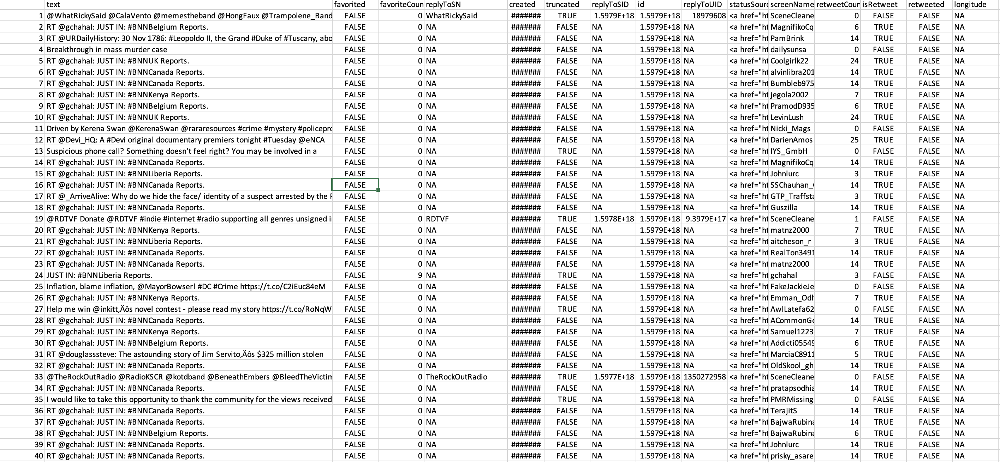
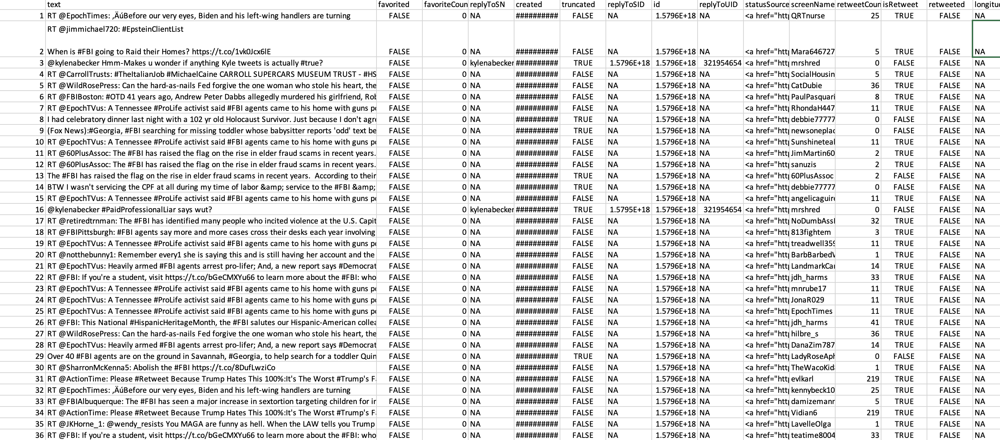
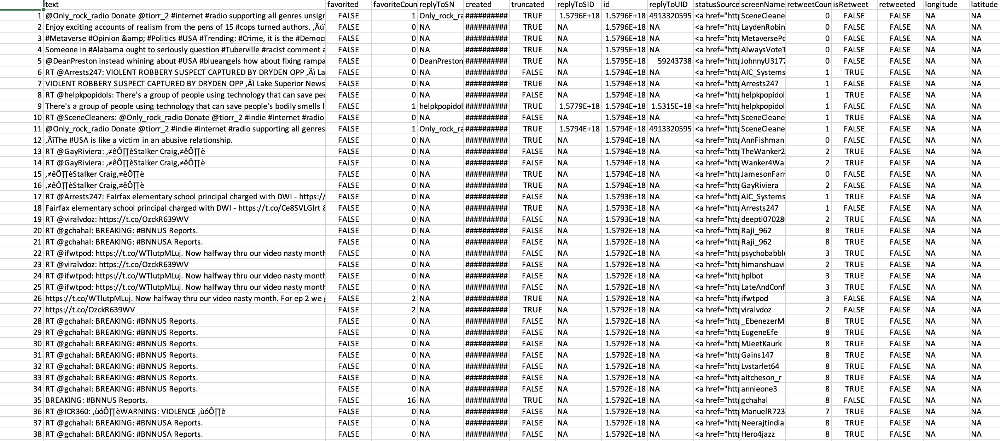
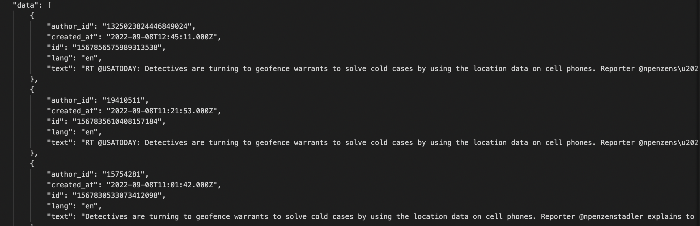
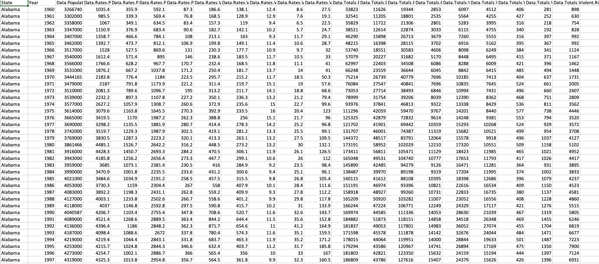

Data gathering is the process of gathering and measuring information about variables of interest in a systematic way that allows one to answer stated research questions, test hypotheses, and evaluate results. All fields of study, such as the physical and social sciences, the humanities, business, etc., have to collect data as part of their research. Different fields use different methods, but the focus is always on making sure the data is accurate and honest.
Regardless of the subject of study or preferred method of defining data (quantitative, qualitative), correct data collecting is necessary for preserving the validity of research. Errors are less likely to occur when proper data gathering instruments (existing, updated, or newly designed) and clear instructions for their right usage are chosen.
● incapacity to appropriately answer research questions
● failure to reproduce and validate the study
● erroneous findings that result in wasted expenditure
● tricking other researchers into investigating futile pathways
● compromising public policy decisions
● Primary data gathering
This is original, first-hand data acquired by data researchers, as the name implies. This is the first phase in acquiring information, and it is completed before any more or related research is conducted. Primary data results are very accurate if the information is collected by the researcher. However, there is a drawback: first-hand research can be time-consuming and costly.
● Secondary data gathering
Secondary data is data that has been gathered by third parties and has already been statistically analyzed. This material is either information that the researcher entrusted to others or information that the researcher searched up. Simply put, it's secondhand knowledge. Secondary information, while easier and less expensive to access than primary information, poses problems about veracity and validity. The majority of secondary data is quantitative.
One way in which programs can share information is through the use of an API, or application programming interface. You probably utilize an API every time you do anything on your phone, from sending a message to checking the score of a game. They both employ an application programming interface (API) to retrieve and send the data to your mobile device. An application programming interface (API) acts as an intermediary between a user and a service by receiving requests, translating them, and delivering responses. Developers essentially use APIs to gain access to resources on behalf of end users. Of course, an API only delivers the information that the application's developers have decided to make available. A valid API key is typically needed to authenticate a request made to an API. Instructions and prerequisites for using an API can be found in its accompanying documentation. Indeed, the utilization of several APIs is oftentimes entirely gratis. Following the existing API instructions, developers can typically construct a URL to get the data in a browser.
A well-documented API, the Twitter API grants developers advanced access to the social media platform. You can use it to learn from and engage with Tweets. Direct messages, users, and other Twitter resources can all be interacted with. Developers can access user searches, block lists, real-time tweets, and more using Twitter's application programming interface (API).
Twitter has made a number of application programming interfaces (APIs) available to programmers. Researchers and businesses can use these APIs to mine Twitter for information. Smaller initiatives can also benefit from it, including data analysis, bot development, and even the creation of fully automated systems that can communicate with Twitter. The Twitter Application Programming Interface (API) will be used to retrieve recent public Tweets that are relevant to a given search query.
The record data is gathered from the FBI's website, Crime Data Explorer. The FBI's Crime Data Explorer (CDE) wants to make criminal and noncriminal law enforcement data sharing more open, easier to access, and better known.
There are several record data collected according to the requirements of analysis because crime is a broad topic with many subcategories. The reord data provides information on crime in the United States for various age groups, genders, and races. From 1960 to 2019, the state crime data provides information on crime types. The hate crime dataset provides information on offenders in the United States from 1990 to 2020.
| Snippet of Dataset | Description |
|---|---|
| 
|
|
| 
|
|
| 
|
|
| 
|
|
| 
|
|